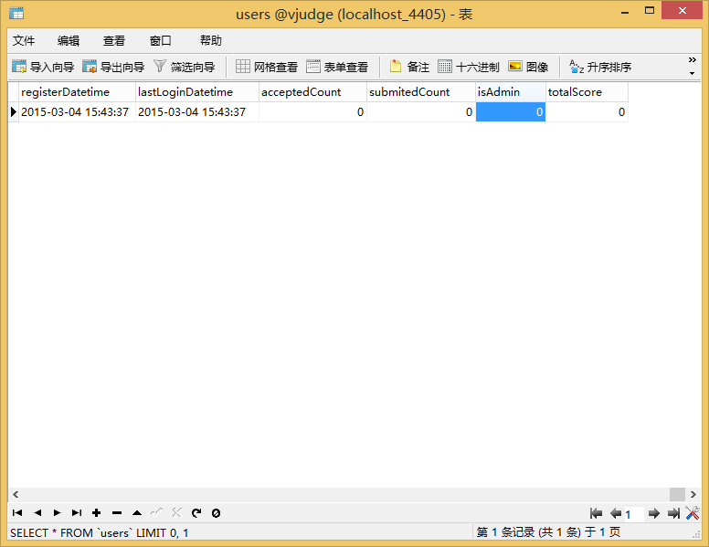
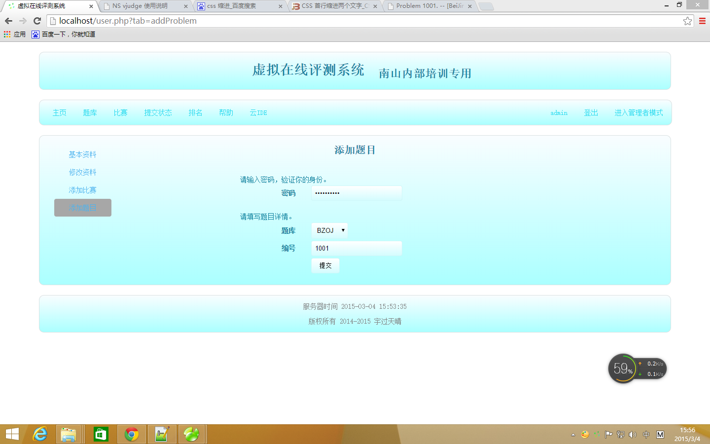
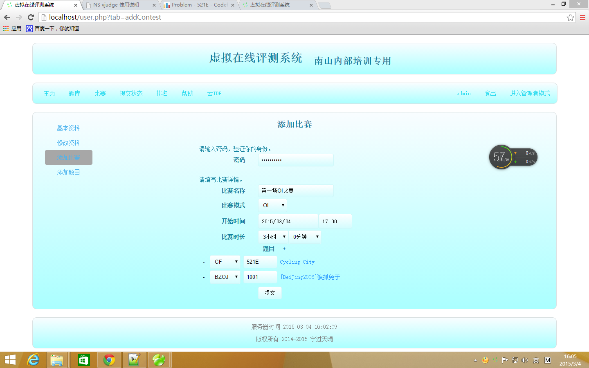
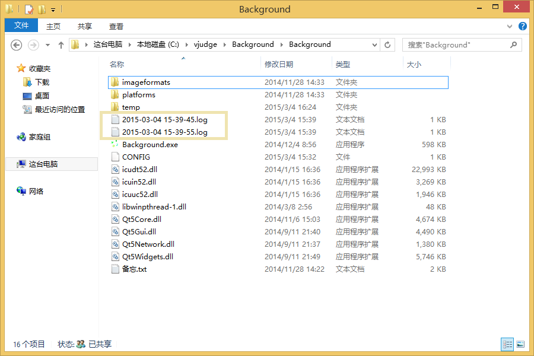

1.本机密码
nsoi123456
2.注册管理员账号
现在题库已经注册了一个管理员账号，账号：admin，密码：nsoi123456
现在题库上注册一个账号，然后打开桌面上的“navicat”，打开“localhost_4405”的“vjudge”数据库，再打开“users”表，把要修改的用户对应行的“isAdmin”修改为1，保存修改，然后再重新登陆题库就可以了。
3.添加题目
进入添加题目页面添加，如：http://localhost/user.php?tab=addProblem，需要获取管理员权限，并且修改数据库后需要重新登陆。
4.添加比赛
进入添加比赛页面添加，如：http://localhost/user.php?tab=addContest，需要获取管理员权限，并且修改数据库后需要重新登陆。
OI模式：以分数排名 不能实时知道评测结果 只能看自己的代码。
ACM模式：以分数排名 能实时知道评测结果 只能看自己的代码。
一旦某道题目被设成了比赛题目，那么直到比赛结束，它将不会被看见，也不能被再设成其他比赛的题目。
5.管理者模式
如果你是管理员，你可以点击导航条右边的“进入管理者模式”进入该模式，在该模式下，你可以
1)查看所有题目，包括隐藏的题库。
2)对单个题目进行修改，比如对英文题目添加翻译。
说明
"Background"复制vjudge的抓题，提交，云IDE等功能，若不启动则vjudge不能正常工作。
说明
若"Background"出现问题，会在C:\vjudge\Background\Background目录中出现*.log文件，若出现，请与开发者联系，及时修复。
说明
题库没有提供密码找回功能，所以想要找回密码，只有通过查询或修改数据库获得。数据库密码储存经过了md5编码，所以修改密码时需要把数据库的数据修改为密码的md5值，如:nsoi123456=>5cf14ab6de47037d55f782bae914d3c6
说明
用户需先报名相应的比赛才能参加。